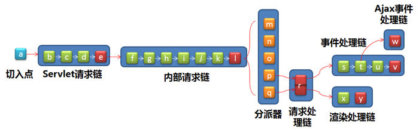

http://blog.csdn.net/mindhawk/archive/2009/12/15/5009381.aspx
tapestry源码品读
本文的目的旨在详细解读Tapestry 5.1的调用链设计，以清晰的反映出Tapestry是如何将一个HTTP请求转变为其内部的组件处理的。但阅读本文之前，您最好能对Tapestry5 的使用有所了解，本文将不详细讨论Tapestry的使用方法。
下面，直接切入主题，谈一下Tapestry调用链的大体设计思想。
Tapestry处理调用链的大体思路是首先将Servlet的请求，转换为其内部形式的请求，以保证Tapestry框架的适用性，也是就说可以 用于其它的协议。之后，再将内部请求分派给不同的处理器，执行相关的操作。比如对于最核心的组件，一个页面显示的请求到达后，就会分配给一个页面渲染的处 理器，让其调用页面执行其渲染过程；再比如一个资源请求（比如读取一个js文件）到达后，将会分配给一个资源处理器，让其将所需资源返回给客户端。
下面我将分五个部分详细讨论调用链的设计方法，分别是：切 入点 、Servlet 请求链 、内 部请求链 、分 派器 、核 心处理器 。
在介绍这几部分前，我先给出整个调用链的结构，以便形象的认识这个调用链。

http://hiphotos.baidu.com/hxzon/pic/item/de6430d3779147423bf3cff2.jpg
| a | TapestryFilter | b | 全局数据保存过滤器 | c | 可忽略路径过滤器 | d | GZIP过滤器 |
| e | Servlet请求链终端处理器 | f | 更新检查过滤器 | g | URL重写过滤器 | h | 静态文件过滤器 |
| i | 全局数据保存过滤器 | j | 请求结束通知过滤器 | k | 错误处理过滤器 | l | 内部请求连终端处理器 |
| m | 根节点分派器 | n | 虚拟资源分派器 | o | 资源分派器 | p | 组件事件分派器 |
| q | 页面渲染分派器 | r | 请求处理链终端处理器 | s | 安全过滤器 | t | Ajax过滤器 |
| u | 直接渲染过滤器 | v | 事件处理链终端处理器 | w | Ajax事件处理链终端处理器 | x | 安全过滤器 |
| y | 渲染处理链终端处理器 |
之所以起名叫做切入点，是为了形象的说明Tapestry集成到Servelt容器的特点。
Tapestry5采用了一种非侵入式的集成方式，使用javax.servlet.Filter作为框架的入口（默认的实现是 org.apache.tapestry5.TapestryFilter）。这种设计的好处是不会与其它Servlet冲突，框架可以有选择性的处理传 入的请求，而对于那些无需框架处理的请求任可以交由Servlet容器负责。
由于这种使用过滤器的方式与面向方面的编程有一定的相似性，所以我给这种集成起名为切入点。
下面我们讨论下org.apache.tapestry5.TapestryFilter的主要职责。
TapestryFilter的一个职责是维护框架的启动和销毁。它使用了标准的Filter接口完成了Tapestry框架的启动与销毁逻辑。这 部分主要包括Tapestry IOC容器的启动和销毁，目的是为Tapestry应用创建一个运行环境，并在必要时做清理工作。
TapestryFilter的另一主要职责是将请求转接到Tapestry框架，我们首先看下面这段代码：
public final void doFilter(ServletRequest request, ServletResponse response, FilterChain chain)
throws IOException, ServletException
{
try
{
boolean handled = handler.service((HttpServletRequest) request, (HttpServletResponse) response);
if (!handled) chain.doFilter(request, response);
}
finally
{
registry.cleanupThread();
}
}
这段代码我主要想说明3个问题，一是handler，一是handled，一是cleanupThread。
handler是一个org.apache.tapestry5.services.HttpServletRequestHandler类型的属性，在Filter初始化时已经构造完成。它是Tapestry调用链的起点，后续我会仔细讨论这个handler。
handled是handler的一个返回值，作用是告诉TapestryFilter Tapestry框架是否处理了这个请求，如果没有，则继续调用其它的Filter工作，也就说把请求的处理权交还给容器。
cleanupThread这个函数则用于清除当前这个请求使用的痕迹，因为Tapestry内部很多服务都是基于线程维护的状态。
前一节提过，Filter会将请求传递给一个HttpServletRequestHandler，本节将着重介绍这个Servlet请求的处理器。
这个处理器的作用主要是对Servlet相关的操作进行预处理，将请求转换为Tapestry内部的格式，然后再将这种内部格式的请求传递个内部请求链。也就是说如果切换到其它的运行环境，只要修改切入点和这一部分的请求链即可平滑的切换到新的运行环境。
Tapestry采用了管道模式来组织这个处理器。管道的一个特点具有多个过滤器和一个终端处理器。其中，过滤器负责对传入或传出的请求进行加工，而终端处理器则最终负责处理传入的请求。所以，用户可以通过插入过滤器扩展框架的行为。
下面我们看下Tapestry为这个处理器定义的扩展点。
public void contributeHttpServletRequestHandler(OrderedConfiguration<HttpServletRequestFilter> configuration,
@Symbol(SymbolConstants.GZIP_COMPRESSION_ENABLED)
boolean gzipCompressionEnabled,
@Autobuild GZipFilter gzipFilter,
@InjectService("IgnoredPathsFilter")
HttpServletRequestFilter ignoredPathsFilter)
{
configuration.add("IgnoredPaths", ignoredPathsFilter);
configuration.add("GZIP",
gzipCompressionEnabled ? gzipFilter : null,
"after:IgnoredPaths");
HttpServletRequestFilter storeIntoGlobals = new HttpServletRequestFilter()
{
public boolean service(HttpServletRequest request, HttpServletResponse response,
HttpServletRequestHandler handler)
throws IOException
{
requestGlobals.storeServletRequestResponse(request, response);
return handler.service(request, response);
}
};
configuration.add("StoreIntoGlobals", storeIntoGlobals, "before:*");
}
扩展点通过一个java函数定义，用户可以在应用的配置类中实现这个函数对框架进行扩展。默认的配置点里面包含了3个过滤器，分别是 全局数据保存过滤器（StoreIntoGlobals）、 可忽略路径过滤器（IgnoredPaths）和 GZIP过滤器（GZIP）。
全局数据保存过滤器是一个内部类，主要用于将HttpServletRequest和HttpServletResponse保存到一个全局的空间中，后续处理可以很容易的获取这两个对象。
可忽略路径过滤器是一个用于过滤路径的过滤器，对于那些Tapestry框架不接受的路径，可以通过正则表达式的方式，使用IgnoredPathsFilter这一扩展点定义这些不需要处理的路径。值得注意的是，路径是大小写不敏感的。
GZIP过滤器则是在允许使用GZIP压缩返回结果时，压缩返回结果。可以通过“tapestry.gzip-compression-enabled”这个配置指定是否压缩。
这个管道的终点是org.apache.tapestry5.services.TapestryModule的内部类 HttpServletRequestHandlerTerminator。它会构造HttpServletRequest和 HttpServletResponse的包装类org.apache.tapestry5.services.Request和 org.apache.tapestry5.services.Response。并最终将请求专递给 org.apache.tapestry5.services.RequestHandler。它是Tapestry内部调用链的起点，我们在下一节讨论 这个处理器。
上一节，一个servlet请求已经成功的转换为了tapestry内部的数据结构Request和Response。这一节，我们继续介绍内部调用链的处理流程。
这部分调用链作用和上一部分有些相似，但不同的是这部分的处理已经开始进入Tapestry框架的核心部分了，所执行操作也是为后续流程做准备。
下面，我同样将其扩展点的代码贴出。
public void contributeRequestHandler(OrderedConfiguration<RequestFilter> configuration, Context context,
// @Inject not needed because its a long, not a String
@Symbol(SymbolConstants.FILE_CHECK_INTERVAL)
@IntermediateType(TimeInterval.class)
long checkInterval,
@Symbol(SymbolConstants.FILE_CHECK_UPDATE_TIMEOUT)
@IntermediateType(TimeInterval.class)
long updateTimeout,
UpdateListenerHub updateListenerHub,
URLRewriter urlRewriter)
{
RequestFilter staticFilesFilter = new StaticFilesFilter(context);
RequestFilter storeIntoGlobals = new RequestFilter()
{
public boolean service(Request request, Response response, RequestHandler handler)
throws IOException
{
requestGlobals.storeRequestResponse(request, response);
return handler.service(request, response);
}
};
RequestFilter fireEndOfRequestEvent = new RequestFilter()
{
public boolean service(Request request, Response response, RequestHandler handler)
throws IOException
{
try
{
return handler.service(request, response);
}
finally
{
endOfRequestEventHub.fire();
}
}
};
configuration.add("CheckForUpdates", new CheckForUpdatesFilter(updateListenerHub,
checkInterval, updateTimeout), "before:*");
// we just need the URLRewriterRequestFilter if we have URL rewriter rules, of course.
if (urlRewriter.hasRequestRules())
{
URLRewriterRequestFilter urlRewriterRequestFilter = new URLRewriterRequestFilter(
urlRewriter);
configuration.add("URLRewriter", urlRewriterRequestFilter, "before:StaticFiles");
}
configuration.add("StaticFiles", staticFilesFilter);
configuration.addInstance("ErrorFilter", RequestErrorFilter.class);
configuration.add(
"StoreIntoGlobals",
storeIntoGlobals,
"after:StaticFiles",
"before:ErrorFilter");
configuration.add(
"EndOfRequest",
fireEndOfRequestEvent,
"after:StoreIntoGlobals",
"before:ErrorFilter");
}
您同样可以扩展这个扩展点，添加新的过滤器。默认的6个过滤器，分别是： 更新检查过滤器（CheckForUpdates）、 URL重写过滤器（URLRewriter）、 静态文件过滤器（StaticFiles）、 全局数据保存过滤器（StoreIntoGlobals）、 请求结束通知过滤器（EndOfRequest）和 错误处理过滤器（ErrorFilter）。它的终端处理器是org.apache.tapestry5.services.TapestryModule的内部类 RequestHandlerTerminator。
更新检查过滤器的主要职责是检查页面的Java类和模板是否有修改，如果有则重新生成对应的组件。可以通过“tapestry.file- check-interval”和“tapestry.file-check-update-timeout”这两个属性修改检查的间隔。
URL重写过滤器只有在配置了重写规则是才会实际的放入调用链中，重写规则可以通过URLRewriter这个扩展点定义。
静态文件过滤器的职责是判断请求的是否为context下的静态资源，如果是并且不是Tapestry的模板资源，则将请求重新交由Servlet容器处理。
全局数据保存过滤器与上一节的全局数据保存过滤器功能相似，但是现在保存的不是HttpServletRequest和HttpServletResponse，而是其内部结构Request和Response。
请求结束通知过滤器主要负责产生一个请求终止的事件，Tapestry内部会在启动时注册一个事件监听器，负责维护Session数据的一致性。你也可以注册监听这个事件，不过一般应用很少能用到这一机制。
错误处理过滤器正式Tapestry漂亮的异常报告机制的魔力所在，一旦请求有异常发生，那么这个过滤器则会捕获这一异常，然后调用异常页面显示异常信息。你也可以通过"tapestry.exception-report-page"修改错误页面。
最后，这个调用链会进入终端处理器节点，由终端处理节点调用org.apache.tapestry5.services.Dispatcher分派请求，下一节我们将介绍请求是如何实际的分派出去了。
经过Servlet请求链和内部调用链，一切准备工作都已经做好了，下面要开始实际的处理请求了。Tapestry处理请求时采用了一种责任链的机 制，链中有多个候选的处理器，框架会一次调用这几个处理器执行，当某个处理器发现当前的请求符合自己处理特征时，便开始实际的处理流程，并且一旦某个处理 器发现自己处理了这个请求，其它剩余的处理器则不会再尝试处理。
在继续介绍分派器之前，先插一段Tapestry识别请求类型的机制，说明框架是如何区别不同的请求的。
Tapestry采用了REST的风格来组织URL，各种决策信息都以固定的格式保存在URL中。比方说如下一个URL：
/test/testajax.zoneupdater:refresh/param0/param1
Tapestry将会认为它是“/test/testajax”页面的“zoneupdater”组件，发出的“refresh”事件，并带有两个参数“param0”和“param1”。
下面接着讲述分配的配置点：
public static void contributeMasterDispatcher(OrderedConfiguration<Dispatcher> configuration)
{
// Looks for the root path and renders the start page. This is maintained for compatibility
// with earlier versions of Tapestry 5, it is recommended that an Index page be used instead.
configuration.addInstance("RootPath", RootPathDispatcher.class, "before:Asset");
// This goes first because an asset to be streamed may have an file extension, such as
// ".html", that will confuse the later dispatchers.
configuration.addInstance("Asset", AssetDispatcher.class, "before:ComponentEvent");
configuration.addInstance("VirtualAsset", VirtualAssetDispatcher.class, "before:Asset");
configuration.addInstance("ComponentEvent", ComponentEventDispatcher.class, "before:PageRender");
configuration.addInstance("PageRender", PageRenderDispatcher.class);
}
框架会根据上述配置，生成一个调用链的代理，代理负责循环的调用调用链中的每个分派器执行，一旦某个分派器返回true，则结束执行。你也可以扩展上述扩展点，添加自己的分派器。
默认的，框架给出了5个分派器，分别是： 根节点分派器（RootPath）、 虚拟资源分派器（VirtualAsset）、 资源分派器（Asset）、 组件事件分派器（ComponentEvent）和 页面渲染分派器（PageRender）。
根节点分派器主要用来处理根节点并与之前版本的集成，因为以前采用的是Start作为页面的主入口，而现在换为了Index。
虚拟资源分派器负责处理合成资源的输出。Tapestry5引入了一个叫做合成资源(Combined asset)的概念，也就是将多个资源合并为一个输出，以加快输出速度。
资源分派器负责输出资源（比如css、js文件），资源可以放在类路径下，也可以放在context路径下。
组件事件分派器是Tapestry的一个核心处理器，负责处理客户端向服务器发出的请求，并将这一请求转换为组件的事件。
页面渲染分派器则是负责处理页面渲染的工作，即将生成一个页面，返回给客户端。
到此为止，我们已经大体上能知道Tapestry是如何工作的了。下一步我将详细介绍事件处理和页面选择的调用链。因为其它几个处理器的处理到此已经结束了，只有事件处理和页面渲染还存在调用链。
上一节我们已经说到一个请求已经可以分派到不同的处理器进行处理了，下一步则是进入Tapestry的核心，研究Tapestry是如何处理事件和页面渲染这两项最重要的工作的。
其实我们会有一种感觉，事件和渲染这两类处理是有很强的关联性的，为什么不统一处理呢？
Tapestry的架构设计时也考虑了这种情况，为了让应用可以统一的扩展处理事件和渲染，提供了一个叫做 org.apache.tapestry5.services.ComponentRequestHandler的接口，用作包装这两类操作的 Facade。这个接口有两个函数，一个负责处理事件，一个负责处理渲染。
因此，本节我们将分作三个小节讨论，分别是：请求处理链 ，事件处理链 和渲染处理链 。
Tapsetry为了能统一看待事件和渲染处理，定制了这个处理链（管道模式）和一个扩展点，您可以通过扩展这个扩展点，扩展Tapestry的功能。默认的系统并没有配置任何过滤器，而只是提供了一个终端处理节点。下面给出了这个调用链构造的代码：
public ComponentRequestHandler buildComponentRequestHandler(
List<ComponentRequestFilter> configuration,
@Autobuild ComponentRequestHandlerTerminator terminator,
Logger logger)
{
return pipelineBuilder.build(logger, ComponentRequestHandler.class, ComponentRequestFilter.class,
configuration, terminator);
}
org.apache.tapestry5.internal.services.ComponentRequestHandlerTerminator 这个对象即为本管道的终端处理器，它实现了ComponentRequestHandler这个接口（该接口具有两个函数，分别处理事件和渲染），并维护 了两个处理器，org.apache.tapestry5.services.ComponentEventRequestHandler和 org.apache.tapestry5.services.PageRenderRequestHandler，用以实际的处理事件和渲染操作。
上一节提到的组件事件分派器和页面渲染分派器分别调用了这个管道的处理事件和处理渲染的函数，并最终分别调用到 ComponentEventRequestHandler和PageRenderRequestHandler。也就是说分派器分派出的处理策略，在这 个管道得到了统一，同时又通过两个不同的函数在管道中得以传播，而最终会进入实际处理事件和页面渲染的处理器。
Tapestry5真正的对于事件的处理是有org.apache.tapestry5.services.ComponentEventRequestHandler这个处理器完成的。框架同样为这个处理器定义了扩展点，您可以根据需要扩展事件处理机制。
我们先看下默认的扩展点定义：
public void contributeComponentEventRequestHandler(OrderedConfiguration<ComponentEventRequestFilter> configuration,
final RequestSecurityManager requestSecurityManager,
@Ajax ComponentEventRequestHandler ajaxHandler
)
{
ComponentEventRequestFilter secureFilter = new ComponentEventRequestFilter()
{
public void handle(ComponentEventRequestParameters parameters, ComponentEventRequestHandler handler)
throws IOException
{
if (requestSecurityManager.checkForInsecureRequest(parameters.getActivePageName())) return;
handler.handle(parameters);
}
};
configuration.add("Ajax", new AjaxFilter(request, ajaxHandler));
configuration.addInstance("ImmediateRender", ImmediateActionRenderResponseFilter.class);
configuration.add("Secure", secureFilter, "before:Ajax");
}
从默认的定义可以看出，框架给出了三个过滤器，分别是： 安全过滤器（Secure）、 Ajax过滤器（Ajax）和 直接渲染过滤器（ImmediateRender）。
安全过滤器无需多说， 是与安全相关的一个过滤器。
直接渲染过滤器默认配置下并不会工作，只有在取消了Tapestry的重定向功能以后才会被调用到，用作在事件处理结束之后直接渲染页面，而不采用 重新定向显示页面。有一点值得注意，虽然这个过滤器会在终端处理器之前被调用，但是由于它的逻辑是放在调用后续节点之后被调用的，所以它可以在终端节点处 理完事件后，再决策是否直接渲染页面。而实际上也是终端处理节点设置了一个标志位后，它才会实际的工作。
Ajax过滤器是一个用于处理Ajax请求的过滤器，但实际上，它会对调用链产生一个分叉，当请求是Ajax模式时，它会将处理转向到另一个ComponentEventRequestHandler，这个处理器是为处理Ajax请求而定制的。
框架为这个处理器定义了一个扩展点，但是默认的并没有配置过滤器，而只是给出了终端处理器 org.apache.tapestry5.internal.services.AjaxComponentEventRequestHandler。您可以通过AjaxComponentEventRequestHandler这个扩展点配置过滤器。
整个处理管道的终端是 org.apache.tapestry5.internal.services.ComponentEventRequestHandlerImpl。
现在可以看出，如果是Ajax请求，最终会到达AjaxComponentEventRequestHandler处理事件，而如果是普通页面请求则到达ComponentEventRequestHandlerImpl处理事件。
这两个事件处理类执行的一个大致思路是根据传入的参数，取出对应的页面或组件，然后激发它们的事件响应函数执行。如果这些事件处理函数有返回值，则 会依据返回值决定下一步做何种操作，比如重定向到某个页面，返回一段JSON数据，或者渲染当前页面等。如果没有返回值，在普通请求下，Tapestry 会默认的使用重定向的方式渲染当前页面，所以你看到的页面链接总是REST 风格的，当然您也可以通过“tapestry.suppress-redirect-from-action-requests”让框架不重定向请求，而 此时框架会在处理的末尾设置一个标志，以便直接渲染过滤器生成页面渲染效果；而在Ajax请求下，框架会返回一个JSON对象，里面包含了需要异步刷新的 页面代码和相关的初始化JavaScript代码。
有关组件是如何分派事件，如何处理返回结果的详情，可以参见我另外两篇博文《Tapestry5 事件分派机制 》和《Tapestry5 事件处理函数返回结果处理策略 》。
本节，我们详细讨论一下页面渲染的处理链。
与其它的链结构类似，Tapestry也为页面渲染提供了一个管道结构和相应的扩展点。
下面我们看下扩展点的具体内容：
public void contributePageRenderRequestHandler(OrderedConfiguration<PageRenderRequestFilter> configuration,
final RequestSecurityManager securityManager)
{
PageRenderRequestFilter secureFilter = new PageRenderRequestFilter()
{
public void handle(PageRenderRequestParameters parameters, PageRenderRequestHandler handler) throws
IOException
{
if (securityManager.checkForInsecureRequest(parameters.getLogicalPageName())) return;
handler.handle(parameters);
}
};
configuration.add("Secure", secureFilter);
}
管道的终端处理器是 org.apache.tapestry5.internal.services.PageRenderRequestHandlerImpl。
PageRenderRequestHandlerImpl负责了页面的渲染的调度，简单的说就是如何让各个组件可以各司其职的渲染出整个页面。
Tapestry渲染的思路是依照组件树的形式，采用递归的方式渲染页面。这 样，HTML标签的嵌套关系就非常自然的在嵌套的过程中得以体现。Tapestry5里面为了提高渲染的效率，采用了一种有限状态机的方式渲染页面，而抛 弃了之前版本采用的递归方式。这样做的好处，简单的说就是将递归算法转变为非递归算法所带来的好处。对于那么复杂的页面，渲染是不必再生产庞大的递归调用 栈了。有关渲染的细节可以参见我另一篇博文《解读Tapestry5.1——页面渲染》
到此，Tapestry的调用链已经介绍完毕，servlet的请求已经清晰的 转化为了对资源的读取，或者是对事件或渲染的处理。实际上Tapestry的处理还没有结束，但是接下来的职责就全由组件接管，比如事件的进一步传播，渲 染出的页面样式等。组件为了达到高可复用性，还必须和Tapestry提供的一些服务打交道，以得到必要的环境信息和处理复杂的调度流程。后续我再介绍有 关机制。